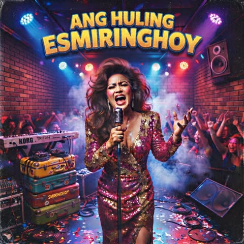

Vizcaya Sound · 2026-10-22
Ang huling Esmiringhoy
Lyrics
Hah... akala mo ba ganun-ganun na lang?
Matapos ang lahat... aalis ka nang walang paalam?
Hindi pwede! Isa lang ang hiling ko bago ka lumisan...
Makinig ka!
Araw-gabi ako'y nag-iisip
Bakit biglang lumamig ang simoy ng hangin?
Bitbit mo na ang maleta mong sira
Iiwan mo na ba ang ating pagsinta?
Huwag kang tumalikod, harapin mo ako
May ritwal pa tayong hindi nabubuo!
Huwag kang magmadali sa pagsakay ng traysikel
Pakinggan mo ang puso kong nanggigigil!
Pwede ba bago tayo magwalay
Isang saglit, sa huling pagkakataon
Tayo ay mag-esmiringhoy!
Iwagayway ang balakang, huwag nang magtampo
Ibigay mo na ang pinaka the best na esmiringhoy!
Esmiringhoy sa kaliwa, esmiringhoy sa kanan
Bago magkaalaman sa huling paalam!
Ano nga ba ang esmiringhoy? Hindi ko rin alam!
Basta't sumayaw ka lang nang walang pagdaramdam!
Hataw sa kama, sabay split sa higaan
Pagkatapos nito, sige na, lumayas ka na!
(Slowing tempo, heavy echo, ultra-dramatic spoken vocal)
Mahal kita... pero mami-miss ko ang esmiringhoy.
Isa pa... isa na lang!
Isang matinding... ESMIRINGHOOOOOOY!
Pwede ba bago tayo magwalay
Isang saglit, sa huling pagkakataon
Tayo ay mag-esmiringhoy!
Iwagayway ang balakang, huwag nang magtampo
Ibigay mo na ang pinaka the best na esmiringhoy mo!
Esmiringhoy...
Hah! Esmiringhoy!
Sige, pwede ka nang lumayas. Tapos na.